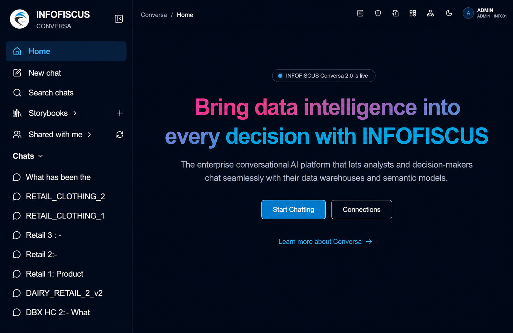
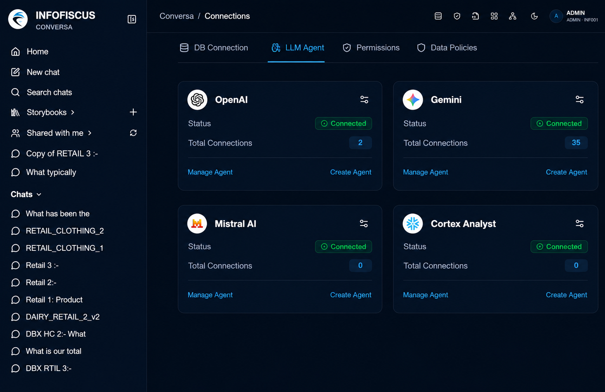

Technical tools slow access
Business users often need SQL, BI expertise, or analyst support before they can explore data.
Conversational analytics platform
Ask questions in plain English, analyze live data, and get AI-powered answers with charts, root-cause context, and recommendations without waiting on SQL or predefined reports.

The enterprise analytics gap
Conversa is built for teams that need deeper insight than static dashboards and faster answers than analyst queues can provide.
Business users often need SQL, BI expertise, or analyst support before they can explore data.
Predefined dashboards show what happened but rarely explain the root cause behind it.
Teams need next-best actions, not just exported tables and disconnected visuals.
Leaders wait for new reports while opportunities, risks, and operational issues move on.
Core capabilities
Every feature is designed to make complex data questions easier to ask, trust, explain, and act on.
Turn plain English questions into optimized SQL on governed enterprise data.
Use the right model path for exploration, explanation, prediction, and recommendations.
Move from what happened to why it happened, what changes next, and what to do.
Analyze business files and unstructured context alongside warehouse data.
Keep metrics, definitions, and business rules consistent across every answer.
Respect enterprise access controls, audit needs, and data governance standards.
Give teams a focused analytics workspace for macOS and Windows.
Reduce repeated manual analysis while accelerating answer delivery.
Product workspace
Conversa gives users a direct path from natural language questions to governed data answers, reusable storybooks, and enterprise data connections.


How it works
Business users ask questions in natural language.
Conversa maps intent to governed metrics and domain context.
The engine generates optimized SQL on live enterprise data.
Answers include charts, root cause signals, and business reasoning.
Teams move faster with recommendations and shareable insights.
Enterprise outcomes
Give every decision-maker a governed way to move from question to insight while data teams retain control over definitions, access, and quality.
Use cases
Variance analysis, margin questions, forecast drivers, and cash visibility.
Pipeline health, revenue movement, account trends, and quota risk.
Supply bottlenecks, process performance, quality patterns, and service levels.
Campaign ROI, funnel conversion, customer segments, and spend effectiveness.
Workforce trends, retention signals, productivity metrics, and planning insight.
Who should use it
Scale self-service analytics without losing governance.
Reduce report queues and focus teams on higher-value analysis.
Get answers without waiting for dashboards or SQL requests.
Centralize trusted definitions and make data easier to consume.
Review board-ready insights with context, confidence, and speed.
FAQ
Need a deeper technical walkthrough? Infometry can map Conversa against your data stack, governance model, and reporting workflow.
Talk to an ExpertYes. Conversa is designed for natural language analytics, so teams can ask business questions directly while the platform handles governed query generation.
Yes. The product is positioned for live data warehouses and governed enterprise data sources, so answers stay tied to current business information.
A semantic layer keeps metric definitions, business rules, and domain language consistent before answers are generated.
It fits executives, business leaders, analytics teams, CIOs, CDOs, and data teams that want faster insight delivery without loosening governance.
Ready for conversational analytics?